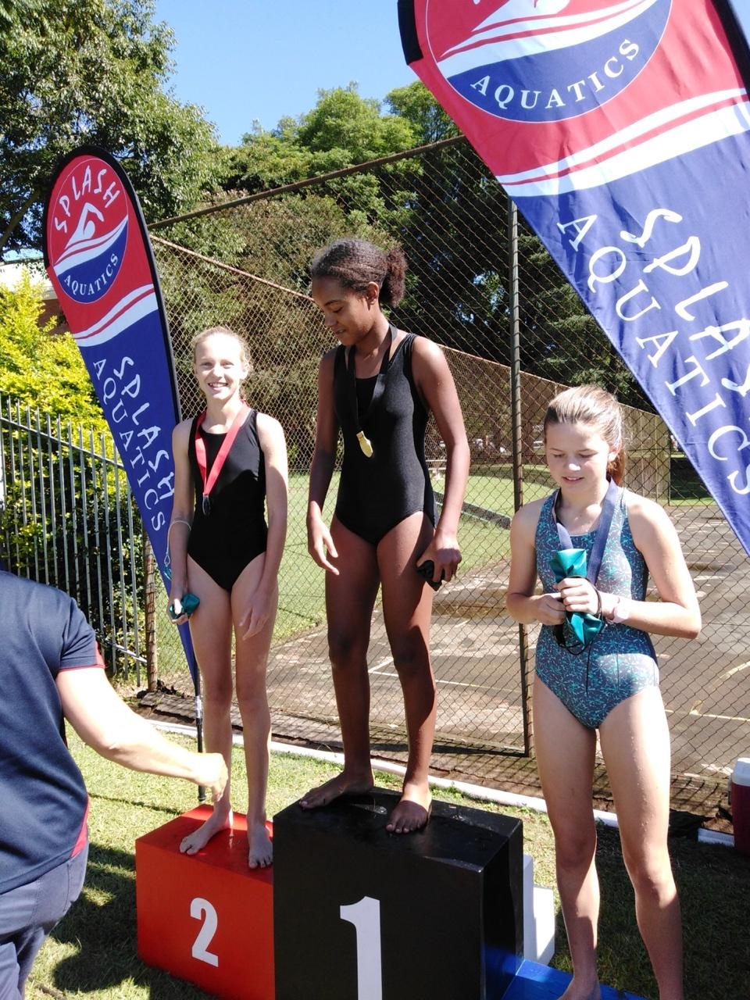

Lesedi Hlatshwayo
Zulu conservationist. Global youth leader. Aged 20.
Zulu conservationist. Global youth leader. Aged 20.

At just 20 years old, Lesedi is embarking on one of the most ambitious conservation journeys of her generation. In the heart of KwaZulu-Natal's iSimangaliso Wetland Park, South Africa's first UNESCO World Heritage Site, she will swim across Kosi Bay, one of Africa's most biodiverse and contested environments.
In a place where crocodiles, hippos, sharks, turtles, and coral reefs co-habit the same waters, Lesedi's swim is not a stunt. It is a statement: that coexistence between humans and wildlife is possible, and that the next generation of African conservationists will lead the way.
Long Swim To Freedom is built around Lesedi's journey to face, and find solutions to, two urgent and connected crises playing out in rural KwaZulu-Natal.
Animals entering communities, destroying crops, and being killed in retaliation. Lesedi dedicates her swim to rhino and hippo anti-poaching awareness, standing for those who cannot defend themselves. As she has said: "If we can protect our children in the water, we must also protect our wildlife on land. Our freedom is connected."
High rates of child drowning, particularly during festive seasons and traditional ceremonies, driven by a lack of swimming skills and water safety knowledge in rural communities. Lesedi's swim is also a call to arms: teaching children to swim is not a luxury, it is a right.
Lesedi's approach to conservation is grounded in a simple but powerful belief: "You only conserve what you love, and you only love what you understand." Long Swim To Freedom is her attempt to make people understand, and love, both the wildlife and the communities of iSimangaliso.
Protecting wildlife and habitats begins with education and empathy, not enforcement alone.
Teaching children to swim and understand animal behaviour can save lives every single year.
Without conservation, tourism collapses. Without tourism, local economies suffer. The three are inseparable.
Coexistence is possible, but it requires a new generation willing to build bridges, not walls.
Empowering Africa's young people as custodians of heritage and biodiversity, reclaiming conservation with authenticity and innovation.
The centrepiece of the documentary is Lesedi's symbolic swim across Kosi Bay, a pristine estuary system within iSimangaliso where freshwater lakes meet the Indian Ocean. The Kosi Bay system is home to leatherback and loggerhead turtles, hippos, crocodiles, and some of the most ancient fishing trap traditions in Africa.
Her swim is not simply an athletic feat. It is a narrative device that connects the two crises: a young woman entering dangerous water, surrounded by wildlife, to show that education, respect, and courage can transform the relationship between people and the natural world.
Filming is planned for May 2026, with exclusive access granted by iSimangaliso Wetland Park.

Lesedi's journey is being captured by a professional film crew with cinematic drone shots of wetlands, underwater close-ups of marine life, and intimate portraits of the communities who live alongside the park. The finished film, 35 to 40 minutes, is designed for Netflix, Showmax, Amazon Prime, BBC Earth, National Geographic, and submission to Sundance, Wildscreen, and the Durban International Film Festival.
Long Swim To Freedom is more than a film about one young woman. It is a story about what South Africa can become when its youth lead the way.